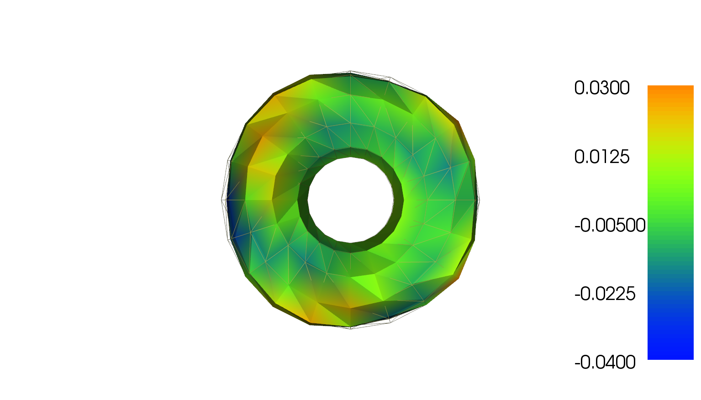
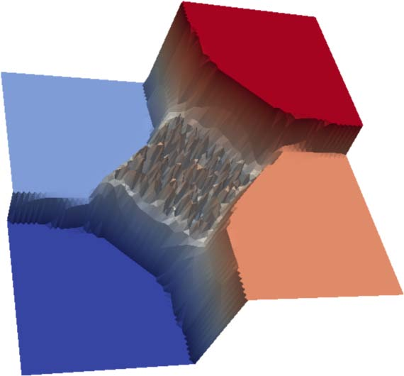
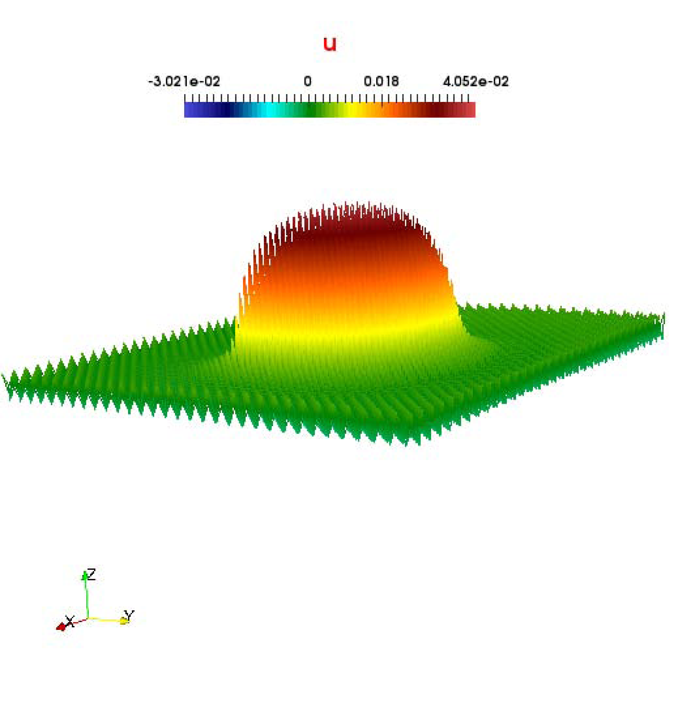
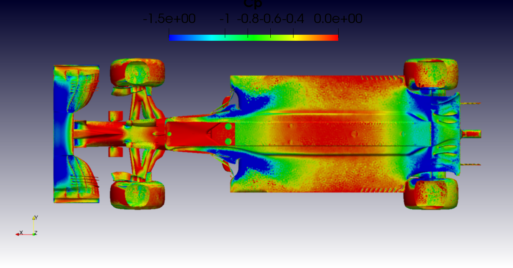
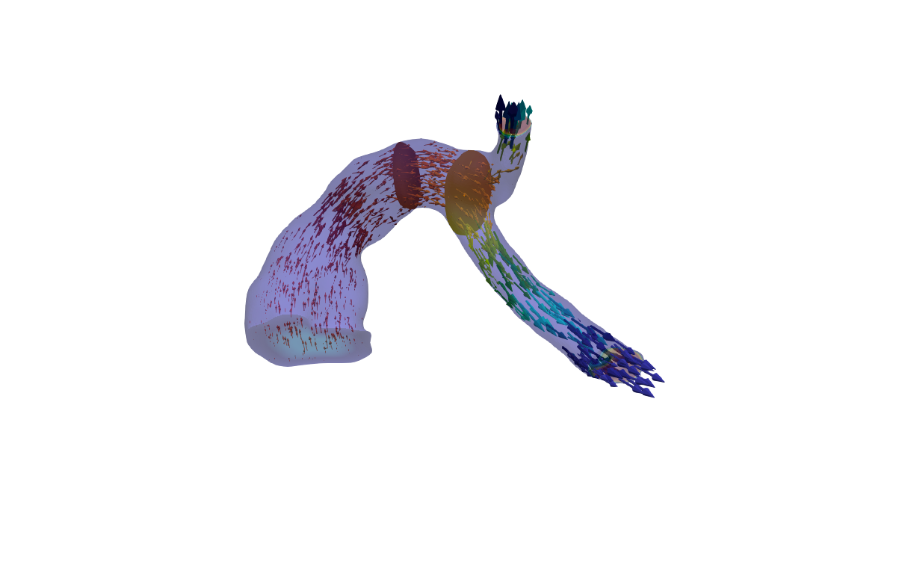
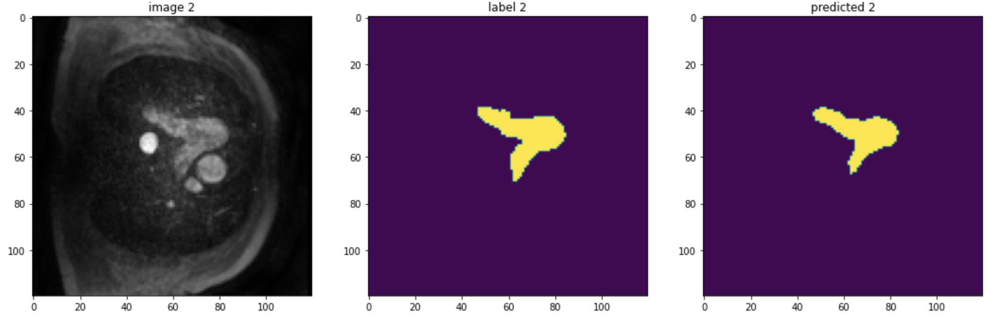

Below is a glimpse of visualizations of the results from my previous and ongoing research projects.
Control over Torus(a)
polycrystallization
TVF
Aerodynamics(F1-Bizkaia)
Bio-Medical(PHFlow)
DL(Automatic Segmentation)
Web-based tool for automatic pulmonary artery hemodynamic assessment from 4D flow MRI(IEEE International Symposium on Biomedical Imaging)
Computational hemodynamic studies of Porcine Pulmonary artery for different spectrum of ARDS(Frontiers Journal in computational physiology)
Adaptivity in the C0IPDG approximations of Total Variational Flow(Journals in Numerical PDE and Applications, Wiley online library )
Deep learning approach to segmentation of pulmonary artery from 4D Flow MRI Volumes.
A Semi Automatic Approach For The Functional Assessments and Quantifiactions of Cardiac Ventricle from 4D Flow MRI Volumes.
Adaptivity in the Optimal Control of Parabolic Variational Inequalities of Obstacle Type.
A C0 interior penalty discontinuous galerkin method for fourth order total variation flow: Existence and Uniqueness (https://onlinelibrary.wiley.com/doi/10.1002/num.22365)
A C0 interior penalty discontinuous galerkin method for fourth order total variation flow: Derivation of the method and numerical results (https://onlinelibrary.wiley.com/doi/10.1002/ num.22359)
On the control of system modeled by partial differential equations. (https://uh- ir.tdl.org/handle/10657/5417)
Control of Parabolic Variational Inequalities of Obstacle Type (preprint)
PhFlow: Software repository on Post processing of 4DFlow MRI.
TVF_C++:C++ Repository on Fourth Order Total Variation Flow.
PA-Segment:Repository on Deep learning approach to the Segmentation of pulmonary artery
RecoMend: Repository on Collaborative filtering based recommender system
VQM:Software repository on Virtual Quantum Machine
WCCM-22 (Oklahoma, Japan): Computational hemodynamic studies in porcine pulmonary artery for different spectrum of ARDS.
WCCM-20 (Paris, France): Adaptive C0IPDG approximation of second order total variation flow .
6th PH meeting: Validation based hemodynamic studies for different spectrum of ARDS
Ultrahigh Field Magnetic Resonance-11th Annual Symposium-2020 (Virtual)
WCCM-18 (Columbia Univerysity, NY): C0IPDG approximation of Fourth order total variation flow .
FEniCS-18(University of Oxford, UK): C0IPDG approximation of fouth order total variation flow